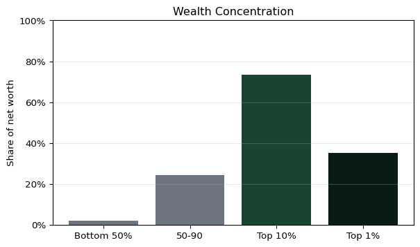

| Measure | P10 | Median | P90 | |
|---|---|---|---|---|
| 0 | Household income | $20,537 | $70,259 | $248,610 |
| 1 | Net worth | $450 | $192,700 | $1,936,762 |
| 2 | Total assets | $9,248 | $331,467 | $2,117,000 |
| 3 | Total debt | $0 | $31,732 | $340,000 |
SCF 2022: Deeper Analysis and Implications
Top Recommendations
Public policymakers
- Prioritize emergency-savings capacity: a large share of households have liquid assets below a few months of income. Policies that support payroll-linked savings, automatic enrollment, and buffer-building would reduce fragility.
- Expand pathways to broad-based asset building: wealth is highly concentrated and homeownership gaps are large across income/wealth groups. Targeted supply, credit access, and down-payment support can help close persistent ownership gaps.
- Strengthen retirement coverage for lower-income workers: retirement account access and balances are sharply lower in the bottom income quintiles. Portable, auto-enrolled retirement options and matched contributions can address coverage gaps.
Business opportunities
- Low-cost liquidity products: demand is strongest for safe, fee-light emergency savings and short-term liquidity tools tied to pay cycles.
- Retirement access and guidance: there is a sizable underserved market for simple retirement enrollment, automated contributions, and low-minimum investment products.
- Debt management and refinancing: high shares of households carry revolving balances or elevated debt-to-income ratios, creating space for balance-transfer, consolidation, and coaching products that reduce interest burdens.
Notes
This report uses the SCF 2022 public data in SCFP2022.csv and applies the SCF household weight (WGT) for all estimates. Variable labels follow SCF naming; when in doubt, consult the SCF codebook for exact definitions of indicator variables and group codes (e.g., AGECL, EDCL, RACECL4).
Core Distribution Snapshot
Wealth Concentration
| Group | Share of net worth | |
|---|---|---|
| 0 | Bottom 50% | 2.2% |
| 1 | Middle 40% (50-90) | 24.4% |
| 2 | Top 10% | 73.4% |
| 3 | Top 1% | 35.1% |

Liquidity Adequacy
| Threshold | Share of households | |
|---|---|---|
| 0 | < 1 month | 46.1% |
| 1 | < 3 months | 69.7% |
| 2 | < 6 months | 81.5% |
Debt Burden and Credit Cards
| Measure | Value | |
|---|---|---|
| 0 | Any debt | 77.4% |
| 1 | Median debt among debtors | $80,220 |
| 2 | Debt-to-income > 1 | 37.8% |
| 3 | Debt-to-income > 2 | 20.0% |
| 4 | Debt-to-income > 4 | 5.3% |
| 5 | Has credit card balance | 45.2% |
Homeownership and Housing Leverage
Retirement Coverage and Balances
Stocks, Bonds, and Business Ownership
| Measure | Share of households | |
|---|---|---|
| 0 | Direct stock ownership | 21.0% |
| 1 | Bond ownership | 1.1% |
| 2 | Business ownership | 14.6% |
Education Installment Loans
Age Group Patterns
Race/Ethnicity Patterns (SCF Codes)
Appendix: Data Coverage
| Total weighted households (sum of WGT) | |
|---|---|
| 0 | 131,306,389 |
Regression-Based Insights (Correlational)
These models are exploratory and not causal. They are meant to surface relationships that may be underappreciated or counterintuitive. I use weighted linear regression with the SCF WGT. Continuous variables are transformed with asinh() so negative values are handled cleanly and effects are roughly log-like at higher values.
Model A: asinh(Net Worth)
| Variable | Coef | SE | |
|---|---|---|---|
| 0 | asinh_income | 0.407882 | 0.033280 |
| 1 | homeowner | 5.468413 | 0.084482 |
| 2 | has_debt | -2.291314 | 0.087462 |
| 3 | asinh_liquid | 0.527470 | 0.015883 |
| 4 | MARRIED=2 | -0.924593 | 0.079885 |
Model B: Retirement Ownership (LPM)
| Variable | Coef | SE | |
|---|---|---|---|
| 0 | asinh_income | 0.082381 | 0.002620 |
| 1 | homeowner | 0.160858 | 0.006625 |
| 2 | asinh_liquid | 0.035522 | 0.001252 |
| 3 | MARRIED=2 | -0.060561 | 0.006311 |
Model C: Credit Card Balance (LPM)
| Variable | Coef | SE | |
|---|---|---|---|
| 0 | asinh_income | 0.011866 | 0.003112 |
| 1 | homeowner | 0.040495 | 0.007868 |
| 2 | asinh_liquid | -0.025444 | 0.001487 |
| 3 | MARRIED=2 | -0.027019 | 0.007496 |
Model D: Low Liquidity (<3 months) (LPM)
| Variable | Coef | SE | |
|---|---|---|---|
| 0 | asinh_income | 0.013541 | 0.002643 |
| 1 | homeowner | -0.146276 | 0.006887 |
| 2 | has_debt | 0.153462 | 0.007252 |
| 3 | MARRIED=2 | 0.034474 | 0.006622 |
| Net worth: +1 SD income (asinh) | Net worth: +1 SD liquid assets (asinh) | Retirement ownership: +1 SD income (asinh) | Credit card balance: +1 SD liquid assets (asinh) | Low liquidity (<3m): +1 SD income (asinh) | |
|---|---|---|---|---|---|
| Effect (approx) | 0.833718 | 1.705462 | 0.168389 | -0.082267 | 0.027678 |
Interpretive Takeaways (What Looks Wrong or Underappreciated)
- Common-sense idea that looks wrong: higher-income households are more likely to have <3 months of liquid assets once you measure liquidity relative to income. The model shows a positive association of income with low-liquidity risk (coef on asinh income in Model D: 0.014).
- Underappreciated: liquidity is a strong negative predictor of carrying a credit card balance even after income and demographics. In Model C, the coefficient on liquid assets is negative (asinh_liquid: -0.025).
- New emphasis: homeownership remains one of the largest correlates of net worth even controlling for income, liquidity, and demographics (Model A homeowner coef: 5.468). This suggests home equity is doing heavy lifting in balance sheets.
- Additional insight: retirement ownership rises with income and liquidity, but homeownership also shows an independent association (Model B homeowner coef: 0.161).